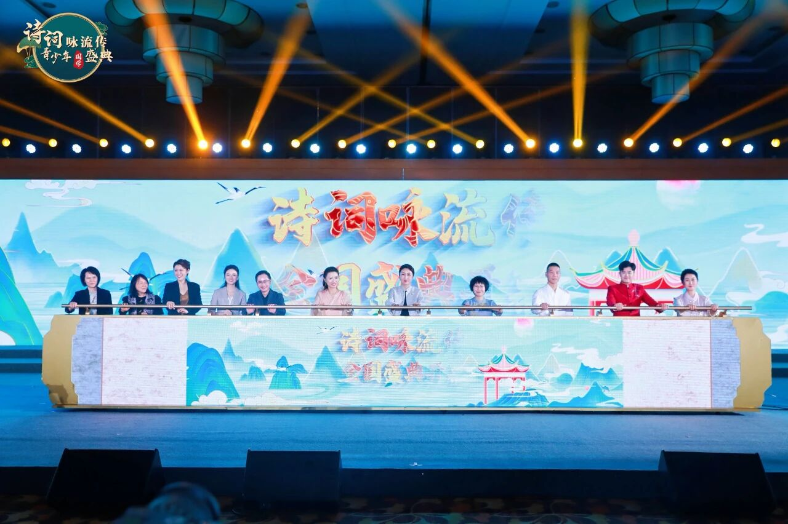

诗词咏流传
亲近诗词歌赋 传承国学经典
增强文化自信 始于中国少年
项目概述
“诗词咏流传”青少年国学盛典以诗词为媒，面向全国中小学生，旨在通过富有知识性、趣味性、专业性、挑战性的多样化活动，推动全国青少年学习、理解、热爱、传承、弘扬中华优秀传统文化，从古人智慧和情怀中汲取营养，涵养心灵，提升文化修养，树立文化自信。
核心特点
- 自动化审批流程
- 多端数据实时同步
- 自定义表单配置
- 数据可视化报表
- 权限精细化管控
- 第三方系统集成（钉钉/企业微信）
- 离线数据缓存
项目效果展示

国学盛典嘉年华

城市复选评选现场
注：以上为示例截图，你可替换为实际项目的截图地址（本地图片需放在同目录，或填写完整URL）。
技术栈
- 前端：Vue3 + Vite + Element Plus
- 后端：Spring Boot + MyBatis-Plus
- 数据库：MySQL + Redis
- 部署：Docker + Nginx
- 其他：JWT鉴权、ECharts可视化
项目成果
30%+
企业办公效率提升
50%
审批流程耗时减少
99.9%
系统稳定性（上线后）
此外，系统上线后帮助客户减少了2名行政人员的人力成本，累计处理审批单据超10万条，客户满意度达95%。